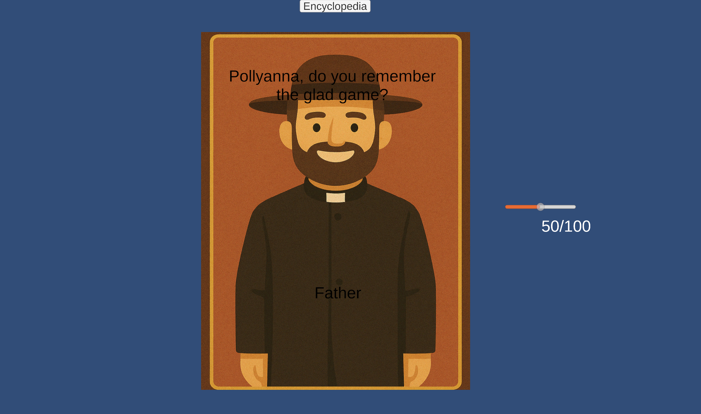

01 Overview
The Glad Game began with a question that felt both educational and deeply personal: why is it so difficult to recognize biased thinking in ourselves, even when we understand the concepts intellectually?
Through an independent study with Jesse Schell, I explored how transformational game design could help bridge the gap between knowledge and self-awareness. Across a semester of research, prototyping, and playtesting, I investigated how narrative, reflection, and interaction might encourage players to notice cognitive distortions as they appear in everyday thoughts.
The final prototype adapts the novel Pollyanna into a branching narrative experience where players identify distorted thinking patterns embedded within dialogue. More importantly, the project became an exploration of how games can support meaningful personal growth rather than simply deliver information.
02 Designing for Transformation
Rather than beginning with a mechanic or a story, I began with a question: what specific change did I want the game to produce in the player? To structure that question, I drew on Sabrina Culyba's framework for transformational game design, which describes transformation along five interlocking dimensions.
The Intended Transformation
For The Glad Game, the central shift the design needed to produce was a move from intellectual recognition to personal recognition — from knowing biases exist to seeing them in oneself.
- "I know cognitive biases exist."
- "I can recognize them in myself."
Dimensions of Change
Mapping the intended transformation across all five dimensions helped clarify which design decisions were actually serving the player's growth and which were only delivering information.
| Dimension | Intended Change |
|---|---|
| Knowledge | Learn common cognitive distortions. |
| Skill | Identify distortions in written thoughts. |
| Awareness | Notice thinking patterns more frequently. |
| Behavior | Reflect on personal thought patterns. |
| Attitude | Appreciate the impact of biased thinking. |
03 Following the Design Journey
The project did not begin with a solution.
Much of the semester involved exploring different ways of making reflection feel engaging rather than instructional. Each prototype taught something different — sometimes by working, sometimes by failing in a clarifying way — and that accumulated learning is what eventually pointed toward the final design.
Three Iterations That Shaped the Direction
Life Coach Simulator
What worked: Direct conversations with a coach character made reflection feel personal rather than abstract.
What didn't: The framing positioned the player as a counselor rather than as someone examining their own thinking, which kept the lessons external.
Resource Management Experiments
What worked: Tying choices to consequences created friction the player had to think through.
What didn't: Optimization pressure overrode reflection — players solved the system instead of thinking about the ideas underneath it.
Pollyanna
Why it solved the problem: An existing emotional narrative gave players a reason to care about the characters' thinking, which made identifying distortions feel like noticing something true about someone they were invested in — not like answering a quiz question.
04 Building the Learning Mechanic
Through playtesting, I discovered that recognizing a distortion was often more difficult than remembering its name. This shifted the design focus away from memorization and toward identifying the specific words and phrases that create distorted thinking.
Narrative Dialogue
Player reads story.
Reflection Minigame
Player highlights biased language.
Encyclopedia
Player learns new distortions.
Final Challenge
Player identifies distortion types independently.

05 What Playtesting Changed
Playtesting repeatedly challenged my assumptions about what players actually found difficult.
While I initially expected players to struggle with terminology, I discovered that identifying biased language itself was the more significant challenge. Each round of testing produced concrete adjustments to the mechanic, the dialogue framing, or the onboarding sequence.
| Observation | Design Response |
|---|---|
| Players could name distortions in the abstract but struggled to spot the biased words inside a sentence. | Shifted the core mechanic from naming distortions to selecting the specific words that signal them. |
| [Second playtest observation — what surprised you?] | [The specific design adjustment you made in response.] |
| [Third playtest observation.] | [Design response.] |
06 Why Pollyanna?
One of the project's biggest challenges was creating emotional investment.
Earlier prototypes successfully encouraged reflection but often felt like quizzes. Adapting Pollyanna allowed me to anchor transformational goals within an existing emotional narrative — players were already invested in the characters, so noticing those characters' distorted thinking felt like an act of empathy rather than evaluation.
07 Reflections on Transformational Design
Across the semester, four lessons stood out — not just about this project, but about how I want to approach design more broadly.
Designing Intentional Experiences
I learned to begin with transformation goals rather than mechanics.
Playtesting as Thinking
Playtesting became the bridge between analysis and action.
Design Beyond Problem Solving
I came to view transformational games as a form of artistic statement rather than purely educational systems.
Research with Purpose
I learned to be more intentional about how I spent time researching and evaluating ideas.
08 Current State & Future Directions
The current prototype successfully supports knowledge acquisition and early skill development around identifying cognitive distortions.
Future work would focus on validating longer-term awareness and behavior changes, expanding narrative content, and exploring more advanced forms of reflection and mindset shifting.
Reflection
Of all the projects in my portfolio, The Glad Game most directly reflects how I think about design. The project challenged me to connect research, education, narrative, and game mechanics around a single transformational goal. More than the prototype itself, the experience taught me how to design intentionally — to start with the change I hope players experience and work backwards toward the systems that might support it.